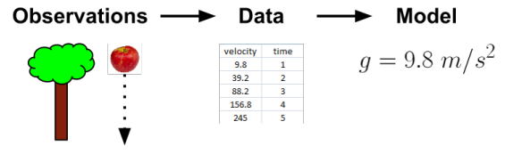
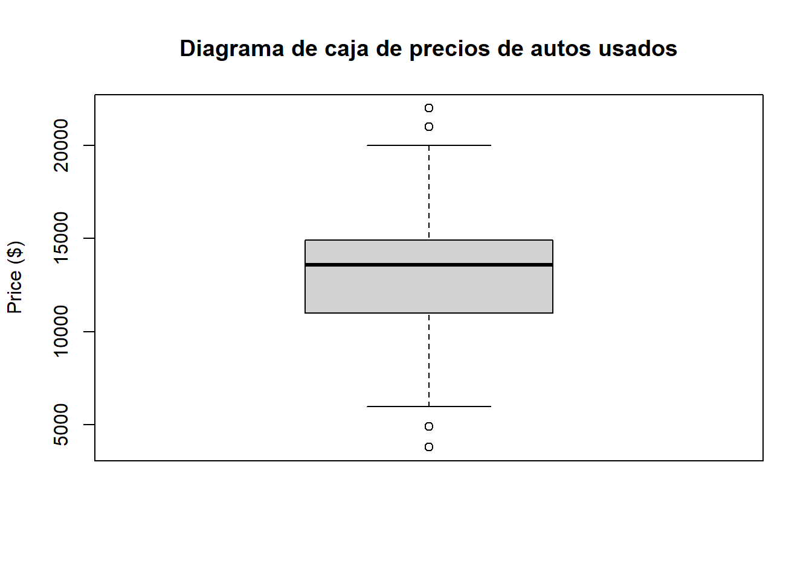
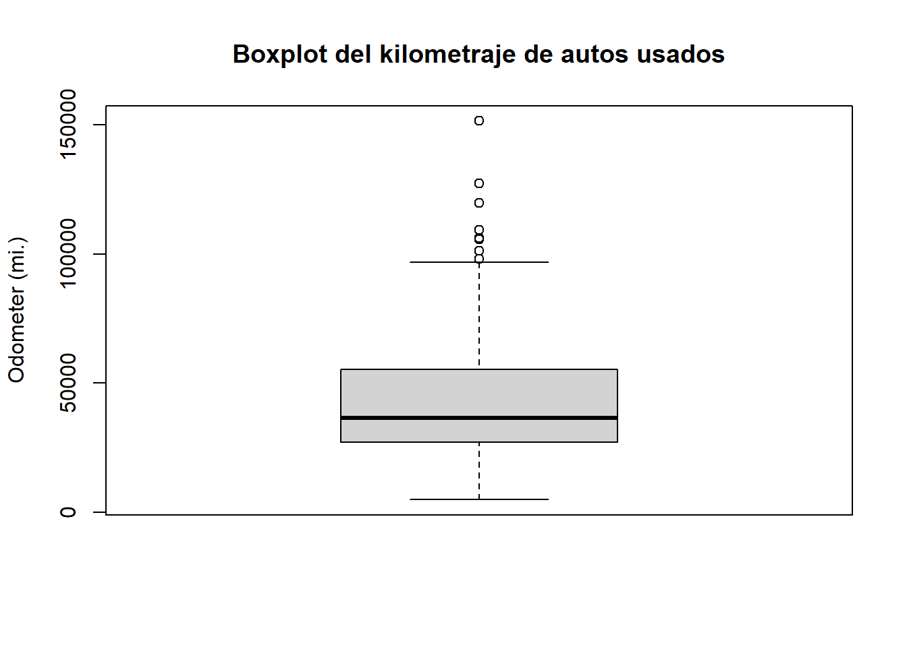
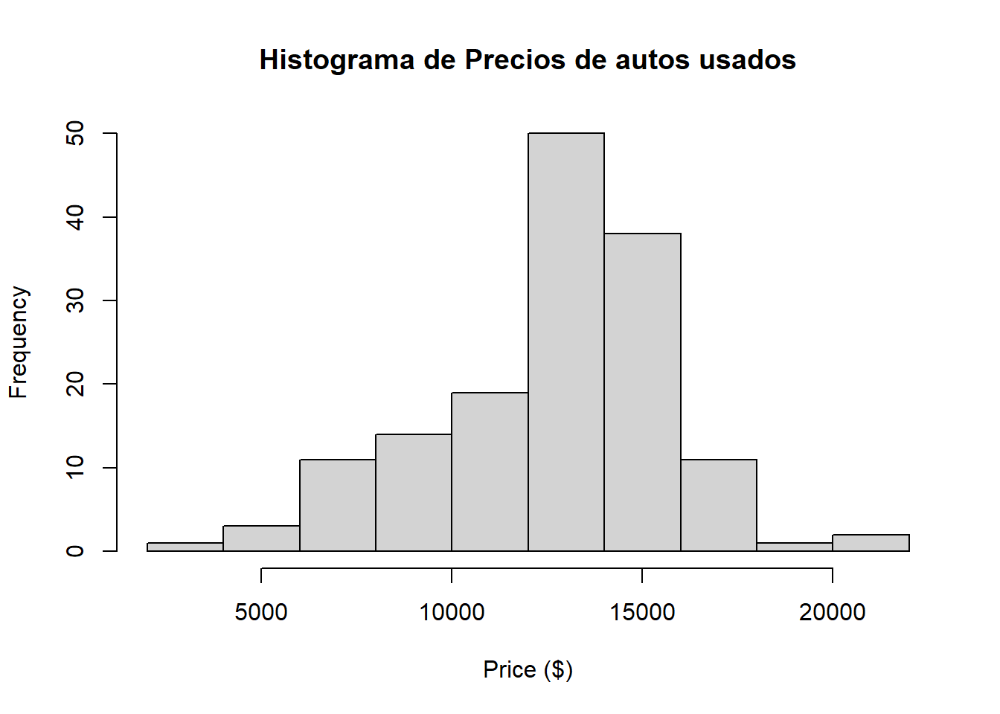
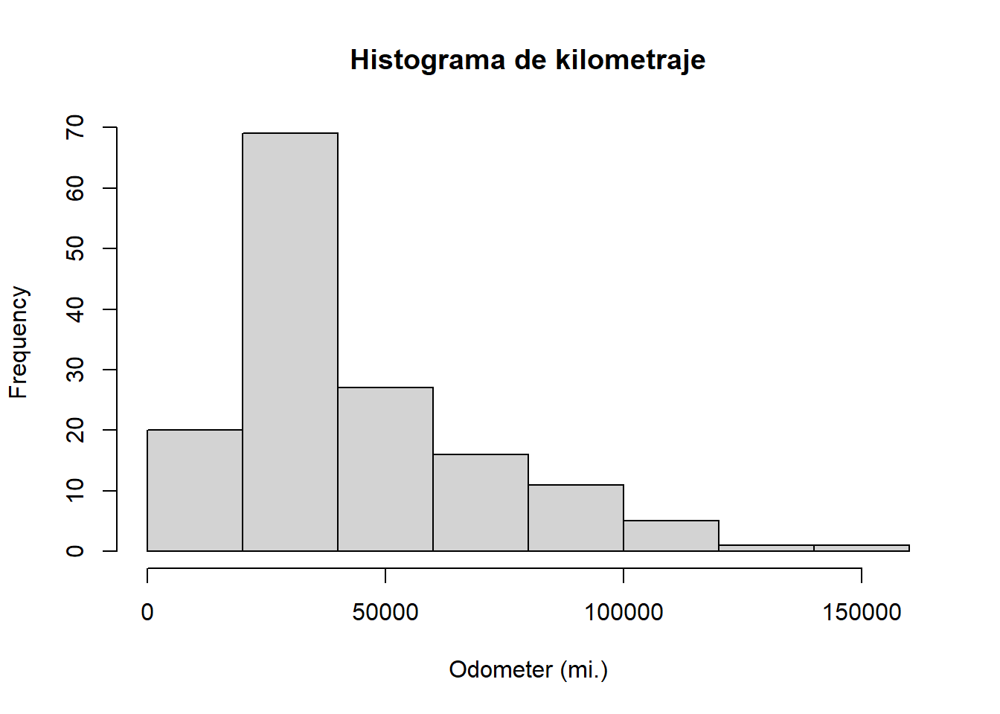

nombre <- c("Jhon","Jane","Steve")
temperatura <- c(98.1,98.6,101.4)
gripe <- c(FALSE, FALSE, TRUE)Resumen Cap 1/2
Integrantes: Mária Jose Bustamante / Nicolás Jadán
Carrera: Biomedicina
Introducción al aprendizaje automático
El objetivo del aprendizaje automático actual es almacenar la gran cantidad de datos existentes en el mundo. Adicionalmente este tipo de aprendizaje permite transformar el conocimiento en datos procesables.
Los orígenes del aprendizaje automático
Los datos están presentes desde el origen del ser humano, un gran ejemplo de esto son los sensores de nuestro cuerpo (sentidos) que el cerebro se encarga de procesar mediante imágenes, olores, sabores, sonidos y texturas.
Al pasar de los años diferentes científicos se han enfocado en varias áreas de estudio para registrar sus observaciones. Esto ha permitido que cada vez estas observaciones estén más automatizadas y puedan ser registradas de manera sistemática en bases de datos computarizadas.
Otro aporte importante ha sido el desarrollo de sensores electrónicos tales como cámaras, micrófonos, sensores de presión y temperatura cuyo objetivo ha sido imitar la capacidad humana, sin la distorción de información.
Todos los datos generados por los distintos sensores presentes en el mundo han provocado una gran cantidad de datos registrados y a los que comunmente se puede acceder mediante computadoras, brindando así información sistemática y objetiva.
El aprendizaje automático es el desarrollo de algoritmos informáticos para convertir datos en acciones inteligentes. Permite recopilar gran cantidad de datos scerca de cualquier tema.
Otro término relacionado con el aprendizaje automático es “data mining” que a diferencia del primero este se enfoca en enseñar a las computadoras a identificar patrones humanos para resolver problemas
Se puede utilizar el aprendizaje automático en tareas que no abarquen minería de datos sin embargo, si puede usar métdos de la metodología de datos.
Usos y abusos del aprendizaje automático
Un algoritmo de aprendizaje automático toma datos e identifica patrones que pueden para la acción. Ha sido utilizado para:
Identificar y filtrar los mensajes de spam del correo electrónico
Prever actividades delictivas
Elaborar estimaciones financieras de tormentas y catástrofes naturales
Crear aviones autopilotados y coches de conducción automática
Identificar a las personas con capacidad para donar
Con los datos de muchas personas de muchas personas, un algoritmo de aprendizaje automático aprende patrones típicos de comportamiento que puede utilizar para hacer recomendaciones.
Consideraciones éticas:
Es necesario tener precaución al momento de obtener o analizar datos para evitar violar las condiciones de servicio o acuerdos de uso de datos, abusar de la confianza o violar la privacidad de los usuarios. Sin embargo, determinadas jurisdicciones pueden impedir utilizar datos raciales, étnicos, religiosos o de otra clase protegida por motivos empresariales.
Una de la consecuencias legales es el mal uso de datos que pueden ocasionar que los usuarios se sientan incómodos al momento de conocer que sus datos pueden hacerse públicos debido a la gran cantidad de trasferencias de datos entre páginas web han hecho usos de estos datos para fines diferentes a los acordados.
¿Cómo aprenden las máquinas?
Tom Mitchell establece que una máquina aprende cuando es capaz de tomar experiencia y utilizarla de forma que su rendimiento mejore en experiencias similares en el futuro.
El proceso de aprendizaje se divide en:
Almacenamiento de datos: Usa el almacenamiento de la memoria para proporcionar una base funcional para el razonamiento posterior.
Abstracción: Traducción de datos almacenados a representaciones más amplias.
Generalización: Usa los datos abstractos como base para la ejecución del algoritmo.
A diferencia del aprendizaje humano que es implicito el aprendizaje por computadora es explícito debido a que todo el proceso es transparente, el conocimiento aprendido puede examinarse, transferirse, utilizarse para acciones futuras y tratarse como una ciencia de datos.
Las estrategias de aprendizaje similares a los esquemas son similares a la parte de abatracción que una computadora realiza. Es decir cada parte del aprendizaje por computadora está directamente relacionado con una parte del aprendizaje humano.
Abstracción y representación del conocimiento
Abstracción: Representar los datos de entrada brutos en un formato estructurado es la tarea esencial de un algoritmo de aprendizaje. El trabajo de asignar un significado a estos datos se producedurante el proceso de abstracción.
Representación: El ordenador resume las entradas brutas en un modelo o descripción explícita de los patrones estructurados entre los datos. Entre los modelos usados están: diagramas, agrupaciones de datos y ecuaciones.
Entrenamiento: Consiste en ajustar un modelo específico a un conjunto de datos. Impone una estructura supuesta a los los datos subyacentes, por lo que permite comprender lo que no se ve y proporciona una teoría sobre cómo se relacionan los datos.
Modelo: Permite descubrir las relaciones no vistas entre los datos. Es decir, presenta las conexiones entre cada uno de los datos que pueden llevar a obtener un resultado.

Generalización
Es el proceso de convertir el conocimiento abstracto en una forma que pueda utilizarse para la acción.
Por otra parte, el poder convertir dicho conocimiento se dificulta debido a que este proceso se limita a los seres humanos por lo que las conclusiones sistemáticas suelen ser imprecisas.

Evaluar el éxito del aprendizaje
El modelo se prueba con un nuevo conjunto de datos y se evalúa en función de la generalización y caracterización de los datos de entrenamiento. El ruido puede provocar que los datos no se generalicen bien esto se debe a:
Error de medición a causa de sensores imprecisos.
Problemas con la presentación de datos (respuestas aleatorias de los usuarios).
Datatos registrados incorrectamente (valores cmal codificados).
Nota: Cuando un modelo funciona correctamente en la fase de entrenamiento pero no durante las pruebas, se dice que está sobreajustado a los datos de entrenamiento debido a que no generaliza bien.
Pasos para aplicar el aprendizaje automático a ls datos
Recolección de datos: Deben estar en formato electrónico. Esto será material de aprendizaje para que el algoritmo genere un conocimiento procesable.
Exploración y preparación: Requiere de intervención humana. En esta fase se debe conocer más acerca de los datos y sus matrices a ser usados.
Entrenar el modelo: Se presentará la selección del algoritmo adecuado y representará los datos en el modelo.
Evaluación de rendimiento: Dependiendo del modelo se debe usar un conjunto de datos de prueba que pueda desarrollar medidas de rendimiento específicas para la acción establecida.
Mejorar el rendimiento: Si es necesario se pueden usar estrategias más avanzadas, cambiar a otro tipo de modelo o complementar con datos adicionales.
Elegir un algoritmo de aprendizaje automático
La elección de un algoritmo de aprendizaje automático depende en su mayoría del tipo de datos y de la tarea propuesta.
Reflexión sobre los datos de entrada
Todos los algoritmos de aprendizaje automático requieren de datos de entrenamiento de entrada, que pueden ser ejemplos o carcterísticas.
Unidad de observación: Describe las unidades en que se miden los ejemplos. Generalmente se representan en forma de personas, puntos temporales regiones geográficas o medidas.
Rasgo: Característica o atributo de un ejemplo que es útil para aprender el concepto deseado.
En la imagen se muestra una hoja de cálculo con un conjunto de datos en formato matricial, lo que significa que cada ejemplo tiene el mismo número de características. En los datos matriciales, cada fila es un ejemplo y cada columna es una característica.
Filas: Automóviles
Columnas: Características de de los autos.

Rasgo numérico: Característica medida en números.
Rasgo categórico o nominal: Característica representada por un conjunto de categorías.
Variable ordinal: Designa una variable nominal con categorías que caen en una lista ordenada.
Las características en el conjunto de datos ayuda a determinar un algoritmo de aprendizaje automático adecuado para una tarea.
Pensar en tipos de aprendizaje automático de algoritmos
Algoritmos de aprendizaje supervisados: Se refiere al hecho de que los valores objetivo desempeñan una función supercisora que indican al algoritmo la tarea que debe aprender. Usados para construir modelos predictivos.
Modelo predictivo: Implica el uso de otros valores del conjunto de datos. Es decir, modelar la relación entre la característica objetivo y las demás. Sin embargo, no son usados para preveer acontecimientos futuros. El modelo más usado en este ámbito es el de regresión.
Casificación: Puede predecir a que categoría pertenece un ejemplo
Algoritmos no supervisados: Utilizados para construir modelos descriptivos.
Modelo descriptivo: Se utiliza para tareas que se beneficiarían de la información obtenida al resumir los datos de nuevas formas. Ninguna característica es más importante que otra. Es decir, son usasos para identificar asociaciones frecuentes en los datos.
Agrupación: Dividir un conjunto de datos en grupos homogéneos.
Adaptación de los datos a un algoritmo adecuado
Tipos de algoritmos:

Tareas para el aprendizaje automático:
Clasificación
Predicción numérica
Detección de patrones
Agrupación
Uso de R para el aprendizaje automático
R es un software libre de código abierto.
Paquete: Colección de funciones de R que pueden compartirse entre usuarios
Instalación y carga de paquetes R RWrka: Colección de funciones que permiten a R acceder a los algoritmos de aprendizaje automático del paquete de software Weka, basado en Java, de Ian H. Witten y Eibe Frank.
Instalación de un paquete R
Se usa la función: install.packages(“Nombre del paquete”)
R se conectará a CRAN y descargará el paquete y las dependencias en el formato correcto para el sistema operativo.
Para especificar una ruta de instalación alternativa se usa: install.packages(“Paquete”, lib=“/path/to/library”) Para consultar opciones se usa: ?install.packages
Instalación de un paquete mediante la interfaz point-and-click

Carga de un paquete R
Los usuarios pueden cargar los paquetes cuando necesiten usando: library(“Nombre del paquete”).
CAPÍTULO 2
Gestión y comprensión de datos
Uno de los primeros componentes clave de cualquier proyecto de aprendizaje automático es la gestión y comprensión de los datos recopilados. La mayor parte del esfuerzo invertido en proyectos de aprendizaje automático se dedica a la preparación y exploración de los datos.
Estructuras de datos en R
Las estructuras de datos que utiliza están diseñadas para facilitar la manipulación de datos en este tipo de trabajo. La más utilizadas son: vectores, factores, listas, matrices. Cada uno de estos tipos de datos está especializado en una tarea específica de gestión de datos.
Vectores
Almacenan un conjunto ordenado de valores llamados elementos, todos estos elementos deben ser del mismo tipo. Los más utilizados son: numéricos, enteros, caracteres o lógicos y dos especiales “NULL” que indica ausencia de valores y “NA” que indica valores omitidos.
Funciones:
c(): Combinación
<-: Asignar un nombre al vector
= Asignación
Ejemplo:
Se puede acceder a los registros contando el número del elemento en el conjunto, empezando por 1, y rodeandolo con corchetes.
temperatura[2][1] 98.6Para obtener un rango de valores se usa el operador de dos puntos. Para obtener la temperatura de Jane y steve:
temperatura[2:3][1] 98.6 101.4Para excluir un elemento se utiliza el artículo negativo (-). Para quitar los datos de Jane se escribe:
temperatura[-2][1] 98.1 101.4Por último, también es útil especificar un vector lógico que indique si cada elemento debe incluirse. Por ejemplo, para incluir las dos primeras lecturas de temperatura pero excluir la tercera, escriba:
temperatura[c(TRUE,TRUE,FALSE)][1] 98.1 98.6Factores
Se utiliza para representar variables nominales. En los datos trabajados anteriormente se puede utilizar un factor para clasificar en géneros. La codificación de variables categóricas como factores garantiza que el modelo tratará los datos adecuadamente.
Ejemplo:
genero <- factor(c("MASCULINO","FEMENINO","MASCULINO"))
genero[1] MASCULINO FEMENINO MASCULINO
Levels: FEMENINO MASCULINOSe obtuvo información adicional (niveles de género) es decir que comprenden el conjunto de categorías. Cuando se crean factores se pueden añadir niveles adicionales. Por ejemplo:
sangre<-factor(c("O","AB","A"),levels = c("A","B","AB","O"))
sangre[1] O AB A
Levels: A B AB OEn este caso se define el factor para los 3 pacientes y se especifica uno adicional de 4 tipos de sangre usando “levels”.
Como resultado, aunque los datos incluyen sólo los tipos O, AB y A, los cuatro tipos se almacenan con el factor sanguíneo como indica la salida Niveles: A B AB O. El almacenamiento del nivel adicional permite la posibilidad de añadir datos con el otro tipo de sangre en el futuro.
Listas
Utilizada para almacenar un conjunto ordenado de valores. Permite diferentes tipos de datos. Se usan para almacenar varios tipos de datos de entrada y salida.
Para este ejemplo se usa el dato de “pacientes” almacenados en 5 vectores. Si se desea mostra los datos de John se debe:
nombre[1][1] "Jhon"temperatura[1][1] 98.1gripe[1][1] FALSEgenero[1][1] MASCULINO
Levels: FEMENINO MASCULINOsangre[1][1] O
Levels: A B AB OEsto hace más largo el proceso de registro por lo que la lista facilita agrupar todos los datos de un paciente en un objeto que se pueda utilizar repetidamente. Se crea utilizando la función ’ list()’.
paciente1<-list(nombre=nombre[1],temperatura=temperatura[1],gripe=gripe[1],genro=genero[1],sangre=sangre[1])
paciente1$nombre
[1] "Jhon"
$temperatura
[1] 98.1
$gripe
[1] FALSE
$genro
[1] MASCULINO
Levels: FEMENINO MASCULINO
$sangre
[1] O
Levels: A B AB OMarco de datos
Tiene filas y columnas de datos. Pede entenderse como una lista de vectores o factores, cada uno con exactamente el mismo número de valores.
Se utiliza la función data.frame().
Ejemplo:
pt_data<-data.frame(nombre,temperatura,gripe,genero,sangre,stringsAsFactors = FALSE)
pt_data nombre temperatura gripe genero sangre
1 Jhon 98.1 FALSE MASCULINO O
2 Jane 98.6 FALSE FEMENINO AB
3 Steve 101.4 TRUE MASCULINO AStrigsAsFactors=FALSE: si no se especifica esta opción R convierte automáticamente cada caracter en un factor.
Para obtener un elemento específico, se debe escribir:
pt_data$nombre[1] "Jhon" "Jane" "Steve"Para extraer varias columnas:
pt_data[c("temperatura","gripe")] temperatura gripe
1 98.1 FALSE
2 98.6 FALSE
3 101.4 TRUEPara extraer las columnas y el estado de gripe, pero listar por nombre. Primero se specifican las filas, seguidas de una coma y luego las columnas.
pt_data[1,2][1] 98.1Si se necesitan una fila más o columna se escribe:
pt_data[c(1,3),c(2,4)] temperatura genero
1 98.1 MASCULINO
3 101.4 MASCULINOPara extraer todas las filas o columnas, en lugar de enumerar cada una de ellas, basta con dejar en blanco la porción en blanco.
pt_data[,1][1] "Jhon" "Jane" "Steve"Para extraer todas las columnas de la primera fila:
pt_data[1,] nombre temperatura gripe genero sangre
1 Jhon 98.1 FALSE MASCULINO OExtraer todo:
pt_data[ , ] nombre temperatura gripe genero sangre
1 Jhon 98.1 FALSE MASCULINO O
2 Jane 98.6 FALSE FEMENINO AB
3 Steve 101.4 TRUE MASCULINO ARecuperar elementos
pt_data[c(1,3),c("temperatura","genero")] temperatura genero
1 98.1 MASCULINO
3 101.4 MASCULINOEs equivalente a:
pt_data[-2,c(-1,-3,-5)] temperatura genero
1 98.1 MASCULINO
3 101.4 MASCULINOMatrices y Arrays
Son estructuras de datos que representan una tabla bidimensional, con filas y columnas de datos. Pueden contener cualquier tipo de datos.
Función: matrix()---filas(nrow) y columnas (ncol).
Ejemplo: Para crear una matriz de 2x2 que almacene las cuatro primeras letras del alfabeto, se usa el parámetro nrow para solicitar que los datos se dividan en dos filas:
m <- matrix(c('a', 'b', 'c', 'd'), nrow = 2)
m [,1] [,2]
[1,] "a" "c"
[2,] "b" "d" Esto es equivalente a la matriz producida utilizando ncol = 2:
m <- matrix(c('a', 'b', 'c', 'd'), ncol = 2)
m [,1] [,2]
[1,] "a" "c"
[2,] "b" "d" Esta matriz se ajustó en orden columna-mayor. Para ilustrarlo mejor, veamos qué ocurre si se añade algunos valores más a la matriz.
Filas:
m <- matrix(c('a', 'b', 'c', 'd', 'e', 'f'), nrow = 2)
m [,1] [,2] [,3]
[1,] "a" "c" "e"
[2,] "b" "d" "f" Columnas:
m <- matrix(c('a', 'b', 'c', 'd', 'e', 'f'), ncol = 2)
m [,1] [,2]
[1,] "a" "d"
[2,] "b" "e"
[3,] "c" "f" Para extraer las filas:
m[1, ][1] "a" "d"Para extraer columnas:
m[, 1][1] "a" "b" "c"Arrays: Tiene filas, columnas y cualquier número de capas adicionales de valores.
Gestión de datos con R
Guardar y cargar estructuras de datos de R
Para guardar una estructura de datos particular en un archivo que pueda ser recargado más tarde o transferido a otro sistema, puede utilizar la función save().
Ejemplo:
save(x,y,z,file="mydata.RData"
Independientemente de si x, y y z son vectores, factores, listas o marcos de datos, se guardarán en el archivo.
El comando load() recreará cualquier estructura de datos ya guardada que estuviera en un archivo.
load(""mydata.RData)
NOTA: Si necesita terminar su sesión de R rápidamente, el comando save.image() escribirá toda su sesión en un archivo llamado simplemente .RData.
Importar y guardar datos de archivos CSV
Los archivos se estructuran en forma de matriz en la que cada línea de texto es un ejemplo y cada ejemplo tiene el mismo número de características.
Delimitador: Símbolo que separa los ejemplos de las características de cada línea.
Encabezado: La primera línea enumera los nombres de las columnas de datos.
Ejemplo: Un archivo CSV que representa el conjunto de datos médicos construido anteriormente tendría el siguiente aspecto.
nombre,temperatura,gripe,genero,sangre
John,98.1,FALSE,MASCULINO,O Jane,98.6,FALSE,FEMENINO,AB Steves,101.4,TRUE,MASCULINO,A
Para cargar este archivo se usa: read.csv()
pt_data <- read.csv("pt_data.csv", stringsAsFactors = FALSE)
Dado un archivo de datos de pacientes llamado pt_data.csv ubicado en el directorio de trabajo de R, esto leerá el archivo CSV en un marco de datos titulado pt_data. Se usa el parámetro stringsAsFactors= FALSE para evitar que R convierta todas las variables de texto en factores.
Si los datos están fuera del directorio de R se usa: read.csv()
Si un archivo CSV no tiene encabezado:
mydata <- read.csv("mydata.csv", stringsAsFactors = FALSE, header = FALSE)Para leer datos tabulares se utiliza: read.table()
Para guardar un marco de datos: write.csv()
write.csv(pt_data, file = "pt_data.csv")Esto escribirá un archivo CSV con el nombre pt_data.csv en la carpeta de trabajo de R.
Importación de datos de bases de datos SQL
Si los datos están almacenados en una base de datos ODBC (Open Database Connectivity) SQL (Structured Query Language) como Oracle, MySQL, PostgreSQL, Microsoft SQL o SQLite, se puede utilizar el paquete RODBC para importar estos datos directamente a un marco de datos de R.
ODBC: Es un protocolo estándar para conectarse a bases de datos, independientemente del sistema operativo o del DBMS (sistema de gestión de bases de datos).
Instalar el paquete RODBC: install.packages("RODBC") ibrary(RODBC)
Abrir una conexión llamada mydb a la base de datos con el DSN my_dsn:
mydb <- odbcConnect("my_dsn")
Si la conexión ODBC requiere un nombre de usuario y una contraseña, deben especificarse al llamar a la función odbcConnect().
mydb <- odbcConnect("my_dsn", uid = "my_username" pwd = "my_password")
sqlQuery(): Para crear un marco de datos de R a partir de las filas de la base de datos extraídas por consultas SQL.
patient_query <- "select * from patient_data where alive =
patient_data <- sqlQuery(channel = mydb, query = patient_query, stringsAsFactors = FALSE)
La variable resultante patient_data será un marco de datos que contendrá todas las filas seleccionadas.
Cuando haya terminado de utilizar la base de datos, la conexión puede cerrarse como se muestra en el comando:
odbcClose(mydb)
Exploración y comprensión de datos
Se comienza a explorar las características y los ejemplos de los datos.
usedcars.csv: contiene datos reales sobre coches de segunda mano anunciados recientemente en un sitio web estadounidense.
Cargamos el documento:
usedcars <- read.csv("usedcars.csv", stringsAsFactors = FALSE)Exploración de la estructura de los datos
str(): Proporciona un método para mostrar la estructura de un marco de datos.
str(usedcars)'data.frame': 150 obs. of 6 variables:
$ year : int 2011 2011 2011 2011 2012 2010 2011 2010 2011 2010 ...
$ model : chr "SEL" "SEL" "SEL" "SEL" ...
$ price : int 21992 20995 19995 17809 17500 17495 17000 16995 16995 16995 ...
$ mileage : int 7413 10926 7351 11613 8367 25125 27393 21026 32655 36116 ...
$ color : chr "Yellow" "Gray" "Silver" "Gray" ...
$ transmission: chr "AUTO" "AUTO" "AUTO" "AUTO" ...Datos obtenidos:
150 obs (n): Los datos incluyen 50 observaciones o ejemplos.
6 variables: Características de los datos, se enumeran por nombre en líneas separadas.
chr: Indica que la característica es de tipo carácter.
int: Variables de tipo entero.
Los valores “Amarillo” “Gris” “Plata” “Gris” son los cuatro primeros valores de la característica color.
Exploración de variables numéricas
summary(): muestra varios estadísticos como resumen común de las variables.
summary(usedcars$year) Min. 1st Qu. Median Mean 3rd Qu. Max.
2000 2008 2009 2009 2010 2012 También se usa summary() para obtener estadísticas de resumen para varias variables numéricas al mismo tiempo:
summary(usedcars[c("price", "mileage")]) price mileage
Min. : 3800 Min. : 4867
1st Qu.:10995 1st Qu.: 27200
Median :13592 Median : 36385
Mean :12962 Mean : 44261
3rd Qu.:14904 3rd Qu.: 55125
Max. :21992 Max. :151479 Los estadísticos de resumen pueden dividirse en dos tipos: medidas de centro y de dispersión.
Medición de tendencia central: media y mediana
Las medidas de tendencia central son utilizadas para identificar un valor que está en el centro de un conjunto de datos.
Media: suma de todos los valores dividida para el número total de valores.
Ejemplo:
(36000 + 44000 + 56000) / 3[1] 45333.33Usando la función mean():
mean(c(36000, 44000, 56000))[1] 45333.33Mediana: es el valor que se encuentra en el centro de una lista ordenada de valores. Su función es: median().
median(c(36000, 44000, 56000))[1] 44000NOTA: Si un conjunto de datos tiene un número par de valores, no hay valor medio. En este caso, la mediana se suele calcular como la media de los dos valores del centro de la lista ordenada.
Medición de la dispersión: Los cuartiles y el resumen de cinco números
Conocer la dispersión proporciona una idea de los máximos y mínimos de los datos y de si la mayoría de los valores se parecen o no a la media y la mediana.
Resumen de los 5 números: Es un conjunto de cinco estadísticas que describen a grandes rasgos la dispersión de un conjunto de datos. Estos son:
Mínimo
Primer cuartil
Mediana
Tercer cuartil
Máximo
Funciones máximo y mínimo: Son los valores más externos en el conjunto de datos. min() y max()
Rango: Intervalo entre el valor mínimo y el máximo. Combinando range() con la función de diferencia, diff() le permite conocer la diferencia entre los dos valores del rango :
range(usedcars$price)[1] 3800 21992 diff(range(usedcars$price))[1] 18192Los cuartiles Q1 Y Q3 se refieren al valor por debajo o por encima del cual se encuentra se encuentra una cuarta parte de los valores. Junto con la mediana (Q2), los cuartiles dividen un conjunto de datos en cuatro partes, cada una con el mismo número de valores.
El 50% intermedio de los datos entre el 1er y el 3er trimestre es de especial interés porque es una medida sencilla del diferenciar. La diferencia entre Q1 y Q3 se conoce como rango intercuartílico (IQR), y puede calcularse con la función IQR():
IQR(usedcars$price)[1] 3909.5Cuantil: Identifica cuantiles para un conjunto de valores. Devuelve el resumen de los 5 números.
quantile(usedcars$price) 0% 25% 50% 75% 100%
3800.0 10995.0 13591.5 14904.5 21992.0 Adicionando “probs” se puede obtener cuantiles arbitrarios como los percentiles 1 y 99.
quantile(usedcars$price, probs = c(0.01, 0.99)) 1% 99%
5428.69 20505.00 seq(): Se utiliza para generar vectores de valores espaciados uniformemente.
quantile(usedcars$price, seq(from = 0, to = 1, by = 0.20)) 0% 20% 40% 60% 80% 100%
3800.0 10759.4 12993.8 13992.0 14999.0 21992.0 Visualización de variables numéricas - boxplots
Boxplot: Gráfico de caja y bigotes. El diagrama de caja muestra el centro y la dispersión de una variable numérica en un formato que permite obtener rápidamente una idea del rango y la de una variable, o compararla con otras variables.
boxplot(usedcars$price, main="Diagrama de caja de precios de autos usados",
ylab="Price ($)")
boxplot(usedcars$mileage, main="Boxplot del kilometraje de autos usados",
ylab="Odometer (mi.)")
Las líneas horizontales que forman la caja en el centro de cada figura representan Q1, Q2 (la mediana) y Q3 cuando se lee el gráfico de abajo arriba. La mediana se indica con la línea oscura, que se alinea con 13.592 $ en el eje vertical para el precio y 36.385 en el eje vertical para el precio y 36.385 millas en el eje vertical para el kilometraje.
El mínimo y el máximo se ilustran utilizando los bigotes que se extienden por debajo y por encima de la caja; sin embargo, la convención es permitir que los bigotes sólo se extiendan hasta un mínimo o un máximo de 1,5 veces el IQR por debajo de Q1 o por encima de Q3. Cualquier valor más allá de este umbral se consideran valores atípicos y se indican como círculos o puntos.
Visualización de variables numéricas - histogramas
Un histograma es otra forma de representar gráficamente la dispersión de una variable numérica. Utiliza cualquier número de intervalos de la misma anchura, pero permite que los intervalos se amplíen o reduzcan según sea necesario.
hist(usedcars$price, main = "Histograma de Precios de autos usados",
xlab = "Price ($)")
hist(usedcars$mileage, main = "Histograma de kilometraje",
xlab = "Odometer (mi.)")
Las líneas verticales que separan las barras, etiquetadas en el eje horizontal, indican los puntos inicial y final del intervalo de valores del intervalo.
En el histograma de precios la barra más alta cubre el intervalo de 12.000 a 14.000 dólares, y tiene una frecuencia de 50. Como sabemos que nuestros datos incluyen 150 coches, sabemos que un tercio de todos los coches tienen un precio de 12.000 a 14.000 $. Casi 90 coches tienen un precio entre 12.000 y 16.000 $.
La desviación a la derecha ocurre cuando los valores del extremo superior (lado derecho) están mucho más dispersos que los valores del extremo inferior (lado derecho).

Comprensión de datos numéricos - distribuciones uniforme y distribuciones normales
La distribución de una variable describe la probabilidad de que un valor se sitúe dentro de varios rangos.
Una distribución uniforme es fácil de detectar con un histograma porque las barras tienen aproximadamente la misma altura.
Curva de campana en una distribución normal:

Medición de la dispersión: varianza y desviación típica
La dispersión se mide mediante un estadístico llamado desviación típica.
Para calcular la desviación típica, primero hay que obtener la varianza, que se define como la media de las diferencias al cuadrado entre cada valor y la media.
Para obtener la varianza y la desvición típica se usa:
var(usedcars$price)[1] 9749892sd(usedcars$price)[1] 3122.482Al interpretar la varianza, los números más grandes indican que los datos se extienden en torno a la media. La desviación típica indica, en promedio, cuánto difiere cada valor de la media.
Distribución normal: La regla 68-95-99,7 establece que el 68% de los valores de una distribución normal caen dentro de una desviación típica de la media, mientras que el 95 por ciento y el 99,7 por ciento de los valores caen dentro de dos y tres desviaciones típicas, respectivamente.

Exploración de variables categóricas
Los datos categóricos se examinan mediante tablas en lugar de estadísticas de resumen. Una tabla que presenta una única variable categórica se conoce como tabla unidireccional. La función table() se puede usar para generar tablas unidireccionales para nuestros datos de autos usados:
table(usedcars$year)
2000 2001 2002 2003 2004 2005 2006 2007 2008 2009 2010 2011 2012
3 1 1 1 3 2 6 11 14 42 49 16 1 table(usedcars$model)
SE SEL SES
78 23 49 table(usedcars$color)
Black Blue Gold Gray Green Red Silver White Yellow
35 17 1 16 5 25 32 16 3 La salida de la tabla enumera las categorías de la variable nominal y un recuento del número de valores que entran en esa categoría.
Cálculo de proporciones de tablas directamente utilizando el comando prop.table() en una tabla producida por la función table():
model_table <- table(usedcars$model)
prop.table(model_table)
SE SEL SES
0.5200000 0.1533333 0.3266667 Los resultados de prop.table() pueden combinarse con otras funciones de R para transformar el resultado. Para mostrar losresultados en porcentajes con un solo decimal, se multiplica las proporciones por 100 y, a continuación, utilizar la función round() especificando dígitos = 1,
Ejemplo:
color_table <- table(usedcars$color)
color_pct <- prop.table(color_table) * 100
round(color_pct, digits = 1)
Black Blue Gold Gray Green Red Silver White Yellow
23.3 11.3 0.7 10.7 3.3 16.7 21.3 10.7 2.0 Medición de la tendencia central: la moda
La moda de una característica es el valor que aparece con más frecuencia. Se suele usar para datos categóricos y en sentido cualitativo para comprender los valores importantes de un conjunto de datos.
Exploración de las relaciones entre variables
Las relaciones de más de dos variables se denominan relaciones multivariantes.
Visualización de relaciones: gráficos de dispersión
Se trata de una figura bidimensional en la que se dibujan puntos en un plano de coordenadas utilizando las coordenadas x e y. La colocación de los puntos revelan asociaciones subyacentes entre las características de las dos coordenadas.
Función plot(): Se especifican los vectores x e y utilizados.
Ejemplo:
plot(x = usedcars$mileage, y = usedcars$price,
main = "Scatterplot of Price vs. Mileage",
xlab = "Used Car Odometer (mi.)",
ylab = "Used Car Price ($)")
Para leer el gráfico, examina cómo cambian los valores de la variable del eje y cambian a medida que aumentan los valores del eje x. En este caso, los valores del precio tienden a ser más bajos a medida que aumentan los valores del kilometraje, lo que implica que los precios anunciados son más bajos para los coches con mayor kilometraje.
La relación entre precio y kilometraje se conoce como asociación negativa porque forma un patrón de puntos en una línea inclinada hacia abajo.
Una asociación positiva parecería formar una línea inclinada hacia arriba.
Una línea plana o una dispersión aparentemente aleatoria de puntos indica que las dos variables no están asociadas en absoluto.
Examen de las relaciones: bidireccionales y tabulaciones cruzadas
Para examinar una relación entre dos variables nominales, se utiliza una tabulación cruzada bidireccional. Permite examinar cómo varían los valores de una variable en función de los valores de otra. El formato es una tabla en la que las filas son los niveles de una variable y las columnas son los niveles de otra. Los recuentos en cada una de las celdas de la tabla indican el número de valores que caen en la combinación concreta de fila y columna.
Se debe instalar el siguiente paquete y cargarlo con su librería:
install.packages("gmodels")
Para conocer la relación entre el color y el auto. Por lo que se dividen los colores en 2 grupos. El primer grupo incluirá los colores conservadores Negro, Gris, Plata y Blanco; el segundo grupo incluirá el azul, el dorado, el verde, el rojo y el amarillo.
Se procede a crear una variable indicadora binaria. Que indicará si el coche es conservador de acuerdo al color. Cuando el valor sea 1 es verdader y cuando sea 0 no.
usedcars$conservative <-
usedcars$color %in% c("Black", "Gray", "Silver", "White")%in%: devuelve TRUE o False para cada valor en el vector.
table(usedcars$conservative)
FALSE TRUE
51 99 Tabulación cruzada:
#CrossTable(x = usedcars$model, y = usedcars$conservative)CrossTable(x = usedcars$model, y = usedcars$conservative)
Las filas de la tabla indican los tres modelos de coches usados: SE, SEL y SES.
Las columnas indican si el color del coche es o no conservador.
El primer valor de cada casilla indica el número de coches con esa combinación de modelo y color.
Las proporciones indican la cantidad de esa celda en relación con el estadístico Chi-cuadrado, el total de la fila, el total de la columna y el total de la tabla.
Las proporciones de filas nos dicen que el 0,654 (65%) de los coches SE están conservadores, frente al 0,696 (70%) de los SEL y el 0,653 (65%) de los SES.
Los valores de Chi-cuadrado se refieren a la contribución de la celda para la independencia entre dos variables. Esta prueba mide la probabilidad de que la diferencia en el número de celdas de la tabla se deba únicamente al azar. Si la probabilidad es muy baja, proporciona pruebas sólidas de que las dos variables están asociadas.
he echo: false option disables the printing of code (only output is displayed).